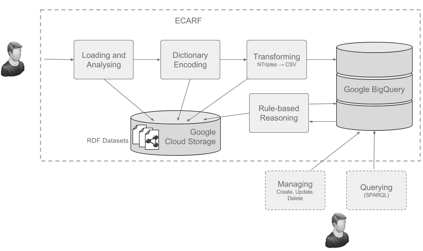

Introduction.
ECARF is an elastic cloud-based RDF triplestore capable of pre-processing, dictionary encoding and forward RDFS reasoning (inference). ECARF is implemented using the CloudEx framework. ECARF uses cloud virtual machines, cloud storage and cloud-based big data columnar databases to provide an elastic RDF triplestore. The following diagram provides an overview of the main ECARF capabilities:
The current implementation of ECARF provides the following features:
- Implementation for the Google Cloud Platform APIs.
- Pre-processing and analysis of RDF dataset files in Google Cloud Storage.
- Efficient dictionary encoding for RDF URIRefs.
- Loading of RDF datasets into Google BigQuery (Big Data columnar database).
- Forward rule-based reasoning using a subset of RDFS entailment rules (rdfs2, rdfs3, rdfs7 and rdfs9). The inference process uses some of BigQuery capabilities.
- Original and materialised triples are loaded into a BigQuery table ready for querying.
The following features are currently in the roadmap:
- Management of materialised triples in BigQuery (adding, updating, deleting)
- Build SPARQL support on top of Google BigQuery SQL.
Getting Started
Checkout the Getting Started section on GitHub.
Documentation
To find out more about ECARF, check out the documentation.
Contributing
See the CONTRIBUTING Guidelines.
License
Apache 2.0 - See LICENSE for more information.